<title>Mansora Sales &amp; Stock</title>
<meta name="claude:viewport-fit-sides" content="cover">
<link rel="preconnect" href="https://fonts.googleapis.com"><link rel="preconnect" href="https://fonts.gstatic.com" crossorigin>
<link rel="stylesheet" href="https://fonts.googleapis.com/css2?family=Inter:wght@400;500;600&family=Space+Grotesk:wght@500;600;700&display=swap">
<style>
/* Plain explainer for a non-technical team. Layout: sticky section nav, then alternating text and screenshot rows.
   Palette: provisional Mansora teal with teal-leaning neutrals. Type: Space Grotesk headings, Inter body. */
:root {
  --bg:#f3f7f6; --surface:#ffffff; --ink:#14211f; --muted:#4a5f5c; --line:#d3dfdc; --accent:#1f5f5b; --accent-ink:#ffffff; --soft:#e0f0ed;
  --good:#146c43; --good-bg:#dff3e8; --warn:#8a5200; --warn-bg:#fff0d6; --bad:#9b2c2c; --bad-bg:#fbe4e4; --shadow:0 1px 2px rgba(20,33,31,.06),0 6px 20px rgba(20,33,31,.06);
  --head:'Space Grotesk','Segoe UI',system-ui,sans-serif; --body:'Inter','Segoe UI',system-ui,sans-serif;
}
@media (prefers-color-scheme: dark) { :root:not([data-theme="light"]) {
  --bg:#0e1918; --surface:#152625; --ink:#e7f1ef; --muted:#9db4b0; --line:#2a403d; --accent:#62c4b8; --accent-ink:#06201d; --soft:#1a3a37;
  --good:#6fd6a0; --good-bg:#16382a; --warn:#f0b867; --warn-bg:#3a2d12; --bad:#f19a9a; --bad-bg:#3b1b1b; --shadow:none; color-scheme:dark; } }
:root[data-theme="dark"] {
  --bg:#0e1918; --surface:#152625; --ink:#e7f1ef; --muted:#9db4b0; --line:#2a403d; --accent:#62c4b8; --accent-ink:#06201d; --soft:#1a3a37;
  --good:#6fd6a0; --good-bg:#16382a; --warn:#f0b867; --warn-bg:#3a2d12; --bad:#f19a9a; --bad-bg:#3b1b1b; --shadow:none; color-scheme:dark; }
* { box-sizing:border-box; }
html { scroll-behavior:smooth; scroll-padding-top:64px; }
body { margin:0; background:var(--bg); color:var(--ink); font:16px/1.6 var(--body); }
body::before { content:""; position:fixed; inset:0 0 auto; height:env(safe-area-inset-top,0px); background:var(--surface); z-index:30; }
.wrap { max-width:1120px; margin:0 auto; padding-left:max(16px,env(safe-area-inset-left,0px)); padding-right:max(16px,env(safe-area-inset-right,0px)); }
h1,h2,h3 { font-family:var(--head); line-height:1.15; text-wrap:balance; margin:0; }
h1 { font-size:clamp(2rem,5vw,3.2rem); letter-spacing:-.02em; }
h2 { font-size:clamp(1.55rem,3vw,2.15rem); letter-spacing:-.01em; }
h3 { font-size:1.2rem; }
p { margin:0; }
.kicker { font:600 .75rem/1 var(--body); letter-spacing:.12em; text-transform:uppercase; color:var(--accent); margin-bottom:10px; }
.lede { color:var(--muted); max-width:68ch; margin-top:10px; font-size:1.05rem; }
nav.top { position:sticky; top:env(safe-area-inset-top,0px); z-index:40; background:var(--surface); border-bottom:1px solid var(--line); }
nav.top .wrap { display:flex; gap:4px; overflow-x:auto; padding-top:8px; padding-bottom:8px; }
nav.top a { white-space:nowrap; color:var(--muted); text-decoration:none; font-weight:500; font-size:.9rem; padding:6px 12px; border-radius:6px; }
nav.top a:hover, nav.top a:focus-visible { background:var(--soft); color:var(--ink); outline:none; }
header.hero { padding-block:48px 36px; }
header.hero p.sub { font-size:1.2rem; max-width:62ch; margin-top:14px; color:var(--muted); }
.note { margin-top:18px; display:inline-block; background:var(--warn-bg); color:var(--warn); padding:8px 12px; border-radius:6px; font-size:.9rem; }
.promises { display:grid; grid-template-columns:repeat(3,minmax(0,1fr)); gap:16px; margin-top:28px; }
.promise { background:var(--surface); border:1px solid var(--line); border-radius:10px; padding:18px; }
.promise h3 { font-size:1.05rem; margin-bottom:6px; }
.promise p { color:var(--muted); font-size:.95rem; }
.band { padding-block:44px; border-top:1px solid var(--line); }
.band.alt { background:var(--surface); }
.screen { display:grid; grid-template-columns:minmax(0,5fr) minmax(0,7fr); gap:28px; margin-top:36px; align-items:start; }
.screen-text h3 { margin-bottom:12px; display:flex; flex-wrap:wrap; gap:8px; align-items:center; }
.tag { font:600 .7rem/1 var(--body); background:var(--soft); color:var(--accent); padding:4px 8px; border-radius:99px; text-transform:uppercase; letter-spacing:.06em; }
dl { margin:0; display:grid; gap:2px; }
dt { font:600 .72rem/1.4 var(--body); text-transform:uppercase; letter-spacing:.08em; color:var(--accent); margin-top:10px; }
dd { margin:0; color:var(--ink); font-size:.97rem; }
.screen-figs { display:grid; gap:14px; min-width:0; }
figure.shot { margin:0; min-width:0; }
.zoom { display:block; width:100%; padding:0; border:1px solid var(--line); border-radius:8px; overflow:hidden; background:var(--surface); cursor:zoom-in; box-shadow:var(--shadow); }
.zoom:focus-visible { outline:3px solid var(--accent); outline-offset:2px; }
.zoom img { display:block; width:100%; height:auto; }
figcaption { font-size:.85rem; color:var(--muted); margin-top:6px; }
.day { display:grid; grid-template-columns:repeat(5,minmax(0,1fr)); gap:12px; margin-top:26px; padding:0; list-style:none; counter-reset:d; }
.day li { background:var(--surface); border:1px solid var(--line); border-radius:10px; padding:14px; counter-increment:d; }
.day li::before { content:counter(d); display:grid; place-items:center; width:26px; height:26px; border-radius:50%; background:var(--accent); color:var(--accent-ink); font:600 .85rem var(--head); margin-bottom:8px; }
.day strong { display:block; font-family:var(--head); margin-bottom:4px; }
.day span { color:var(--muted); font-size:.9rem; }
.tablewrap { overflow-x:auto; margin-top:24px; border:1px solid var(--line); border-radius:10px; background:var(--surface); }
table { border-collapse:collapse; width:100%; min-width:620px; }
th,td { padding:10px 14px; text-align:left; border-bottom:1px solid var(--line); font-size:.95rem; }
thead th { font-family:var(--head); font-size:.95rem; background:var(--soft); }
tbody th { font-weight:500; }
tr:last-child th, tr:last-child td { border-bottom:0; }
td span { display:inline-block; padding:2px 10px; border-radius:99px; font-size:.82rem; font-weight:600; }
td.y span { background:var(--good-bg); color:var(--good); } td.a span { background:var(--warn-bg); color:var(--warn); } td.n span { background:var(--bad-bg); color:var(--bad); }
.aside { margin-top:16px; color:var(--muted); max-width:78ch; }
.problems { display:grid; grid-template-columns:repeat(2,minmax(0,1fr)); gap:14px; margin-top:24px; }
.problem { background:var(--surface); border:1px solid var(--line); border-radius:10px; padding:16px; }
.problem h3 { font-size:1.02rem; margin-bottom:6px; }
.problem p { color:var(--muted); font-size:.95rem; }
.limits { display:grid; grid-template-columns:repeat(2,minmax(0,1fr)); gap:16px; margin-top:24px; }
.limits > div { border-radius:10px; padding:18px; }
.limits .can { background:var(--good-bg); } .limits .cannot { background:var(--bad-bg); }
.limits h3 { margin-bottom:8px; }
.limits ul { margin:0; padding-left:20px; } .limits li { margin:4px 0; }
.phase { margin-top:30px; }
.phase h3 { margin-bottom:10px; }
.phase ol { list-style:none; margin:0; padding:0; display:grid; gap:10px; }
.phase li { display:grid; grid-template-columns:44px minmax(0,1fr); gap:12px; background:var(--surface); border:1px solid var(--line); border-radius:10px; padding:14px; }
.band.alt .phase li { background:var(--bg); }
.phase .n { display:grid; place-items:center; width:36px; height:36px; border-radius:8px; background:var(--accent); color:var(--accent-ink); font:600 1rem var(--head); }
.phase p { color:var(--muted); font-size:.94rem; margin-top:2px; } .phase p.done { color:var(--ink); font-size:.88rem; margin-top:6px; }
.phase strong { font-family:var(--head); }
.checklist { background:var(--soft); border-radius:10px; padding:18px; margin-top:26px; }
.checklist ul { margin:8px 0 0; padding-left:20px; }
details { background:var(--surface); border:1px solid var(--line); border-radius:10px; margin-top:10px; padding:2px 16px; }
summary { cursor:pointer; font-weight:600; padding:12px 0; }
details p { color:var(--muted); padding-bottom:14px; }
.status { display:grid; grid-template-columns:repeat(2,minmax(0,1fr)); gap:16px; margin-top:24px; }
.status > div { background:var(--surface); border:1px solid var(--line); border-radius:10px; padding:18px; }
.status h3 { margin-bottom:8px; } .status ul { margin:0; padding-left:20px; } .status li { margin:6px 0; }
footer { padding-block:36px; color:var(--muted); font-size:.9rem; border-top:1px solid var(--line); }
dialog#lb { border:0; padding:0; background:transparent; max-width:none; max-height:none; width:100%; height:100%; }
dialog#lb::backdrop { background:rgba(5,15,14,.82); }
.lb-in { width:100%; height:100%; display:grid; place-items:center; padding:16px; overflow:auto; }
.lb-in img { max-width:min(1366px,100%); height:auto; border-radius:8px; background:#fff; }
.lb-close { position:fixed; top:calc(12px + env(safe-area-inset-top,0px)); right:calc(12px + env(safe-area-inset-right,0px)); font:600 .95rem var(--body); padding:8px 14px; border-radius:8px; border:0; background:var(--surface); color:var(--ink); cursor:pointer; }
@media (max-width:860px) {
  .screen, .problems, .limits, .status { grid-template-columns:minmax(0,1fr); }
  .promises { grid-template-columns:minmax(0,1fr); }
  .day { grid-template-columns:minmax(0,1fr); }
}
@media (prefers-reduced-motion:reduce) { html { scroll-behavior:auto; } }
</style>

<nav class="top" aria-label="Sections"><div class="wrap">
<a href="#idea">The idea</a><a href="#day">A day in the shop</a><a href="#selling">Selling</a><a href="#cash">Cash and costs</a><a href="#stock">Stock</a><a href="#people">Customers</a><a href="#view">Results</a><a href="#control">Control</a><a href="#safety">Safety</a><a href="#roles">Who can do what</a><a href="#trouble">When things go wrong</a><a href="#mansora">Mansora's side</a><a href="#billing">Getting paid</a><a href="#onboarding">Onboarding</a><a href="#faq">Questions</a><a href="#status">Where we are</a>
</div></nav>

<header class="hero" id="idea"><div class="wrap">
<p class="kicker">Mansora Consulting and Business Solutions</p>
<h1>Mansora Sales &amp; Stock</h1>
<p class="sub">The till, the stockroom and the daily cash check for a small shop, on one laptop. Mansora sets it up, trains the team and looks after it.</p>
<p class="note">Every screen below is real, with made-up sample data for a pretend mini mart. Click any picture to enlarge it.</p>
<div class="promises">
<div class="promise"><h3>It keeps working with no internet</h3><p>Selling, receipts, stock and reports run on the shop laptop. When the internet comes back, the records are sent to the Mansora cloud on their own.</p></div>
<div class="promise"><h3>Records cannot be quietly changed</h3><p>A finished sale cannot be edited or deleted. A mistake is fixed with a refund, which a manager approves and the system records.</p></div>
<div class="promise"><h3>The client keeps control of their data</h3><p>The ordinary support dashboard shows selected shop reports only during an owner-issued, time-limited grant, with access recorded. Replication and privileged hosting access are separate controls covered in the deployment and privacy review.</p></div>
</div></div></header>

<section id="day" class="band alt"><div class="wrap">
<p class="lede">Before serving clients, use Getting started and the client handover checklist to review actual setup, staff permissions, backup verification and human acceptance. Unsaved edits stay in memory and require a discard confirmation when leaving; they cannot be recovered after a forced restart. Lists state loaded-result limits; report Print/PDF exports all loaded rows across pages.</p>
<p class="kicker">The shop day</p><h2>What a normal day looks like</h2>
<p class="lede">The same five steps every day. Everything else in this document supports them.</p>
<ol class="day">
<li><strong>Open the shift</strong><span>The cashier counts the float in the till and enters it.</span></li>
<li><strong>Sell</strong><span>Scan, take payment, give change, print the receipt.</span></li>
<li><strong>Handle exceptions</strong><span>Refunds, discounts and credit sales follow staff permissions and owner limits; a cashier without permission needs an authorised approver.</span></li>
<li><strong>Close the shift</strong><span>Count the drawer. The screen shows whether it is short or over.</span></li>
<li><strong>Check the results</strong><span>The owner looks at the dashboard and reports.</span></li>
</ol></div></section>

<section id="selling" class="band"><div class="wrap"><p class="kicker">For the client</p><h2>Selling</h2><p class="lede">The screens a cashier uses all day. They are built for a person with no technical training, working with a keyboard and mouse.</p><article class="screen"><div class="screen-text"><h3>Sign in</h3>
<dl><dt>What it does</dt><dd>Each person signs in with their own username and password. It works with no internet. After five wrong tries the account waits a minute, and the screen locks itself when nobody has touched it for a while (the owner sets how long).</dd><dt>What the client gets</dt><dd>Every sale and every change carries the name of the person who made it. Nobody has to share a password.</dd><dt>Who can use it</dt><dd>Everyone</dd></dl></div><div class="screen-figs"><figure class="shot"><button type="button" class="zoom" data-src="screenshots/01-login.jpg" aria-label="Enlarge: Sign-in screen showing the business name">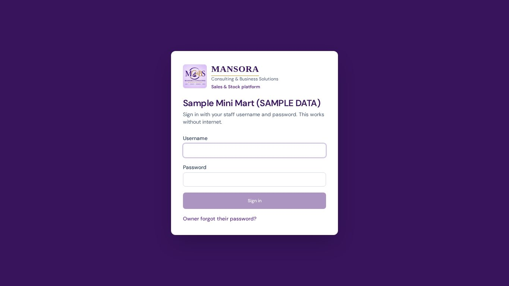</button></figure></div></article><article class="screen"><div class="screen-text"><h3>New sale<span class="tag">Most important screen</span></h3>
<dl><dt>What it does</dt><dd>Scan a barcode or type part of a name, then tap the product. Quantities change with plus and minus. The total is shown in very large figures. Shortcuts exist (F2 to search, F9 to pay) but nobody has to use them.</dd><dt>What the client gets</dt><dd>A fast till with no price mistakes. Prices come from the product list, so a cashier cannot type a different price. Items without available stock are blocked unless the owner has enabled selling into negative stock. Review that setting before launch.</dd><dt>Who can use it</dt><dd>Cashiers, managers and the owner</dd></dl></div><div class="screen-figs"><figure class="shot"><button type="button" class="zoom" data-src="screenshots/02-checkout.jpg" aria-label="Enlarge: Checkout screen with a basket of four items and a total of GHS 70.00">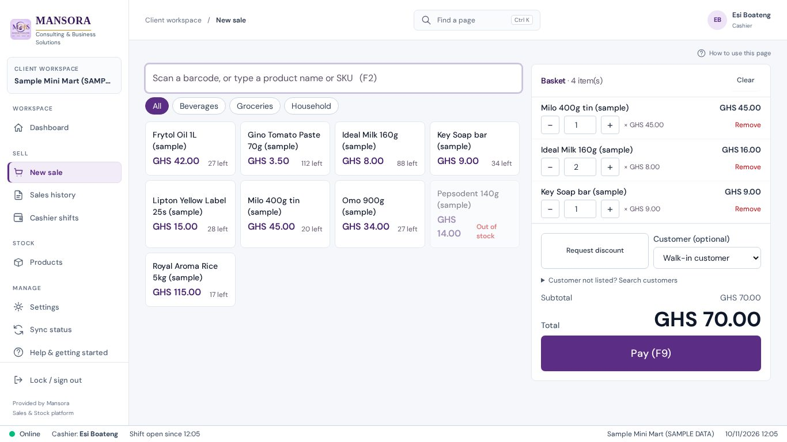</button></figure></div></article><article class="screen"><div class="screen-text"><h3>Take payment</h3>
<dl><dt>What it does</dt><dd>Cash, mobile money, card, or credit, alone or mixed. For cash the change appears in large figures straight away. A sale can be split, for example part cash and part mobile money.</dd><dt>What the client gets</dt><dd>No mental arithmetic at the till. Mobile money and card are recorded, not collected: the cashier checks that the money has arrived before pressing Complete. Credit needs a customer to be chosen.</dd><dt>Who can use it</dt><dd>Anyone who can sell. Discounts and credit follow the signed-in staff permissions; an authorised approver is required when the seller lacks permission (see Who can do what).</dd></dl></div><div class="screen-figs"><figure class="shot"><button type="button" class="zoom" data-src="screenshots/03-payment.jpg" aria-label="Enlarge: Payment window showing amount due, cash received and change to give">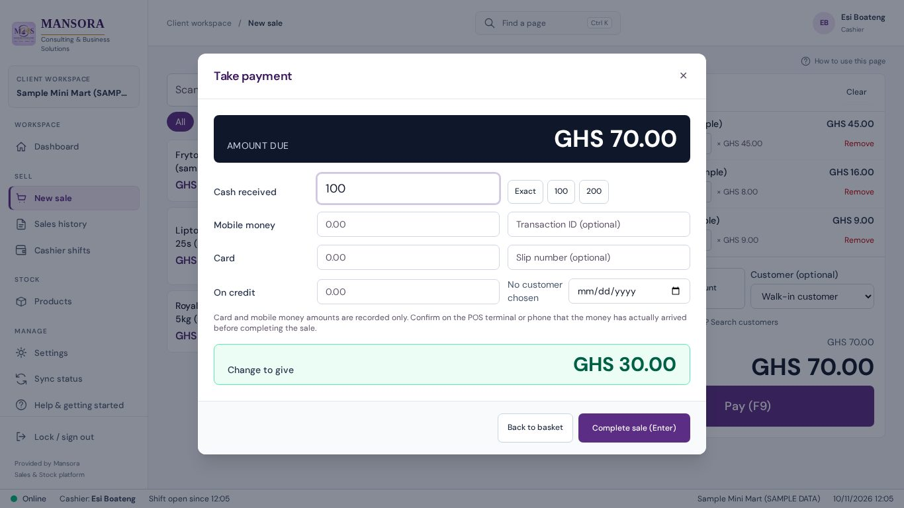</button></figure></div></article><article class="screen"><div class="screen-text"><h3>Sale completed</h3>
<dl><dt>What it does</dt><dd>The sale is saved on the laptop, a receipt number is issued, and the receipt can be printed on the shop printer or saved as a PDF.</dd><dt>What the client gets</dt><dd>If the printer jams or runs out of paper the sale is still saved, and the receipt can be printed again at any time.</dd><dt>Who can use it</dt><dd>Anyone who can sell</dd></dl></div><div class="screen-figs"><figure class="shot"><button type="button" class="zoom" data-src="screenshots/04-sale-done.jpg" aria-label="Enlarge: Confirmation window showing the receipt number and the change to give">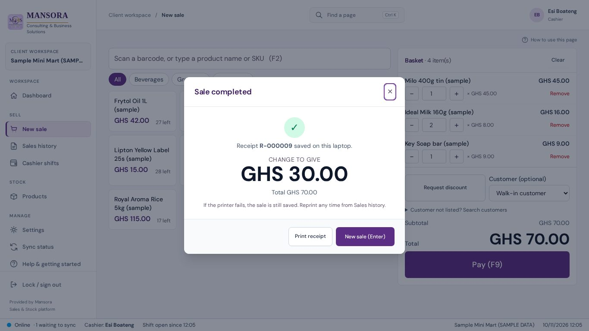</button></figure></div></article><article class="screen"><div class="screen-text"><h3>Sales history and receipts</h3>
<dl><dt>What it does</dt><dd>Find any sale by date, receipt number or customer. Open it to see the items, how it was paid, any refund, and to reprint the receipt.</dd><dt>What the client gets</dt><dd>A completed sale can never be edited or deleted. If something was rung up wrongly, the fix is a refund, which keeps a record of what happened and who approved it.</dd><dt>Who can use it</dt><dd>Cashiers see their own sales. Managers and the owner see everyone's.</dd></dl></div><div class="screen-figs"><figure class="shot"><button type="button" class="zoom" data-src="screenshots/05-sales-history.jpg" aria-label="Enlarge: List of sales for the day with receipt numbers, cashiers and payment methods">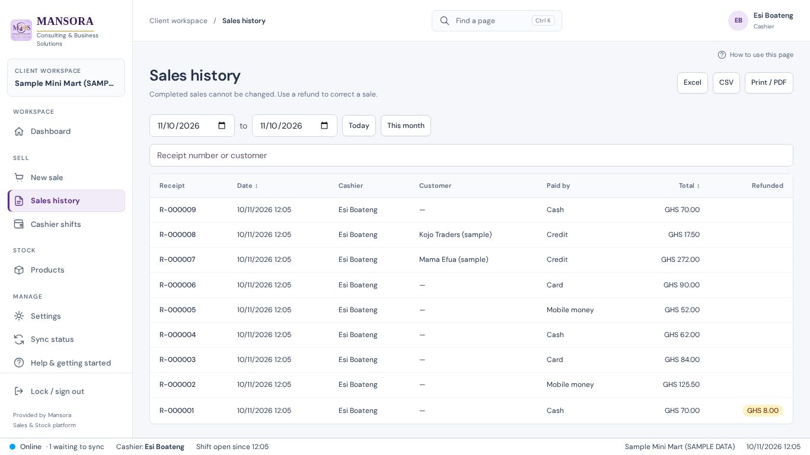</button></figure><figure class="shot"><button type="button" class="zoom" data-src="screenshots/06-receipt-detail.jpg" aria-label="Enlarge: Detail of one sale with items, payments and a refund">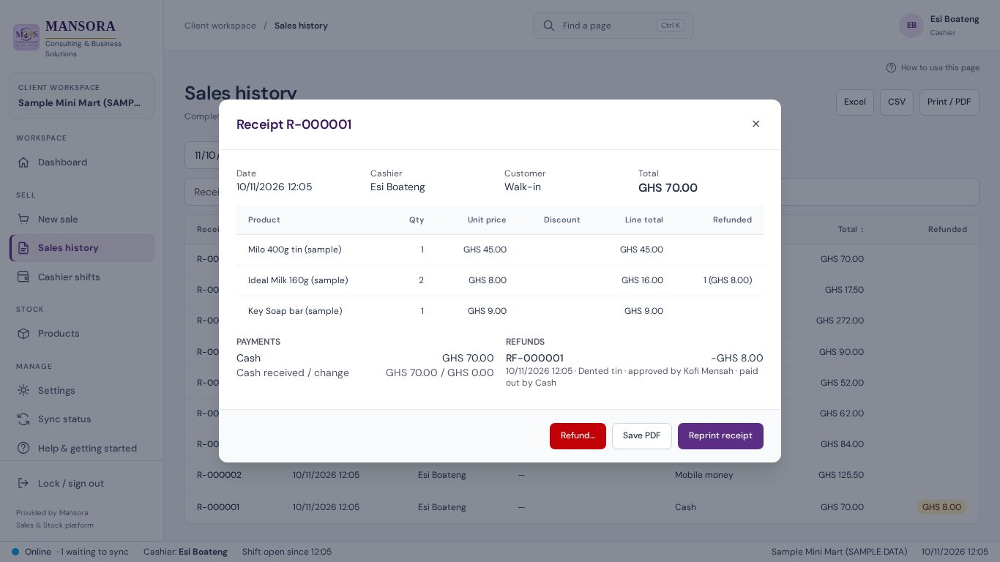</button></figure></div></article></div></section>
<section id="cash" class="band alt"><div class="wrap"><p class="kicker">For the client</p><h2>Cash and costs</h2><p class="lede">Knowing that the till is right at the end of each shift, and what the business spends.</p><article class="screen"><div class="screen-text"><h3>Cashier shifts</h3>
<dl><dt>What it does</dt><dd>A cashier opens a shift by counting the float in the till. During the day the screen keeps a running figure for the cash that should be in the drawer: float, plus cash sales and cash repayments, minus cash refunds and cash paid out. At closing the cashier counts the drawer and the screen shows whether it is short or over. A manager signs the shift off.</dd><dt>What the client gets</dt><dd>A daily till check that takes minutes, and a clear record of which cashier was responsible when money does not match.</dd><dt>Who can use it</dt><dd>Cashiers see their own shift. Managers and the owner see all shifts and sign them off.</dd></dl></div><div class="screen-figs"><figure class="shot"><button type="button" class="zoom" data-src="screenshots/07-shift-cashier.jpg" aria-label="Enlarge: A cashier&#x27;s open shift with the cash expected in the till">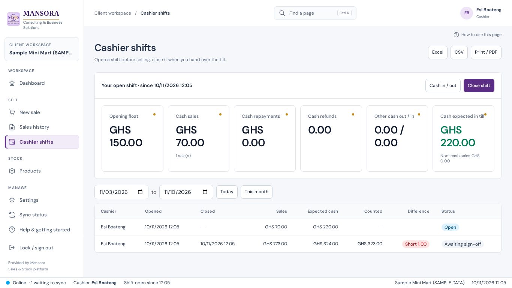</button></figure><figure class="shot"><button type="button" class="zoom" data-src="screenshots/16-shifts-owner.jpg" aria-label="Enlarge: List of shifts with expected cash, counted cash and difference">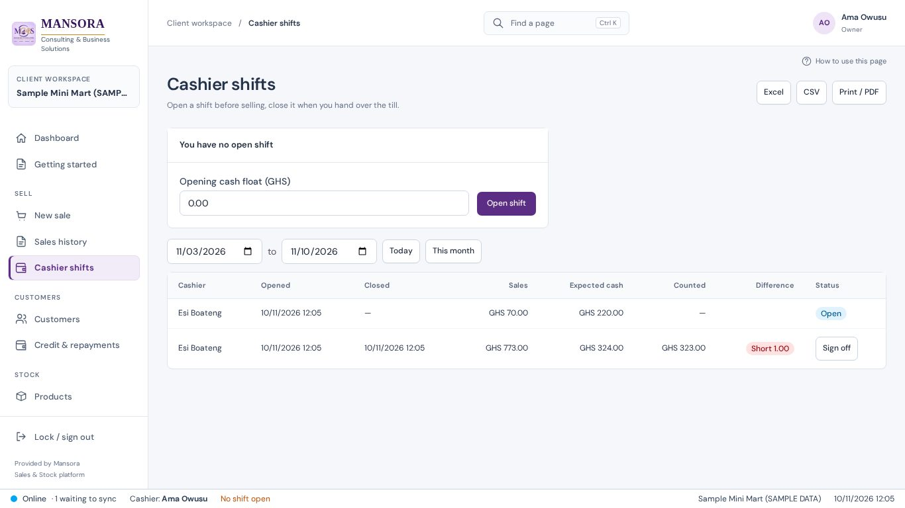</button></figure></div></article><article class="screen"><div class="screen-text"><h3>Expenses</h3>
<dl><dt>What it does</dt><dd>Record running costs such as transport, electricity and rent, by category and how they were paid. Cash taken from the till can be marked, so the till figure stays correct.</dd><dt>What the client gets</dt><dd>Monthly totals by category. Expenses are shown beside the profit report and are never subtracted from it, because the system makes no claim to give a full accounting profit.</dd><dt>Who can use it</dt><dd>Managers and the owner</dd></dl></div><div class="screen-figs"><figure class="shot"><button type="button" class="zoom" data-src="screenshots/17-expenses.jpg" aria-label="Enlarge: Expenses page with totals by category and payment method">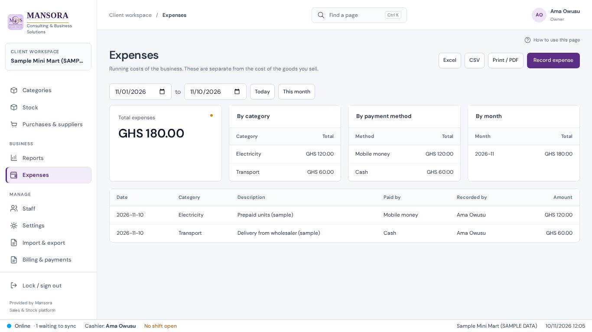</button></figure></div></article></div></section>
<section id="stock" class="band"><div class="wrap"><p class="kicker">For the client</p><h2>Stock</h2><p class="lede">What the shop has, what it is worth, and a trail for everything that changes.</p><article class="screen"><div class="screen-text"><h3>Products</h3>
<dl><dt>What it does</dt><dd>The product list: name, barcode, category, selling price, cost price and the level at which to reorder. Each product can be switched off without losing its history.</dd><dt>What the client gets</dt><dd>One place to keep prices right. Cost visibility follows the owner-controlled cost permission; cashiers lack it by default.</dd><dt>Who can use it</dt><dd>Managers and the owner add and edit. Cashiers can look.</dd></dl></div><div class="screen-figs"><figure class="shot"><button type="button" class="zoom" data-src="screenshots/11-products.jpg" aria-label="Enlarge: Product list with barcodes, categories, prices and stock levels">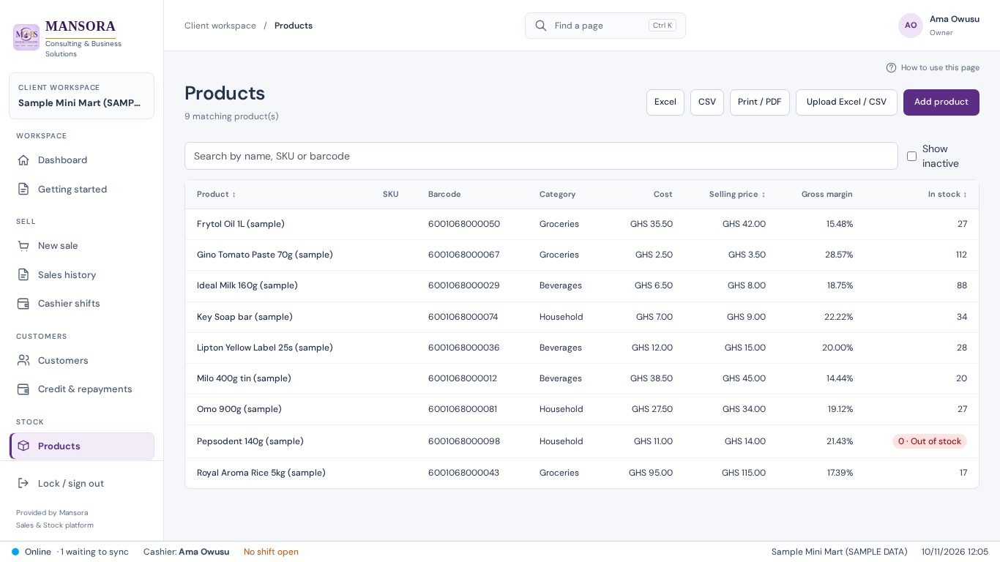</button></figure></div></article><article class="screen"><div class="screen-text"><h3>Stock</h3>
<dl><dt>What it does</dt><dd>What is on the shelf, what is running low, what is out, and what the stock is worth. Damaged goods and corrections are recorded with a reason. A stock count compares what was counted with what the system expects and records only the differences.</dd><dt>What the client gets</dt><dd>Stock is never typed over. Every change is a dated entry saying who did it and why, so stock that goes missing can be traced.</dd><dt>Who can use it</dt><dd>Managers and the owner</dd></dl></div><div class="screen-figs"><figure class="shot"><button type="button" class="zoom" data-src="screenshots/12-stock.jpg" aria-label="Enlarge: Stock overview with stock value, low stock and out of stock counts">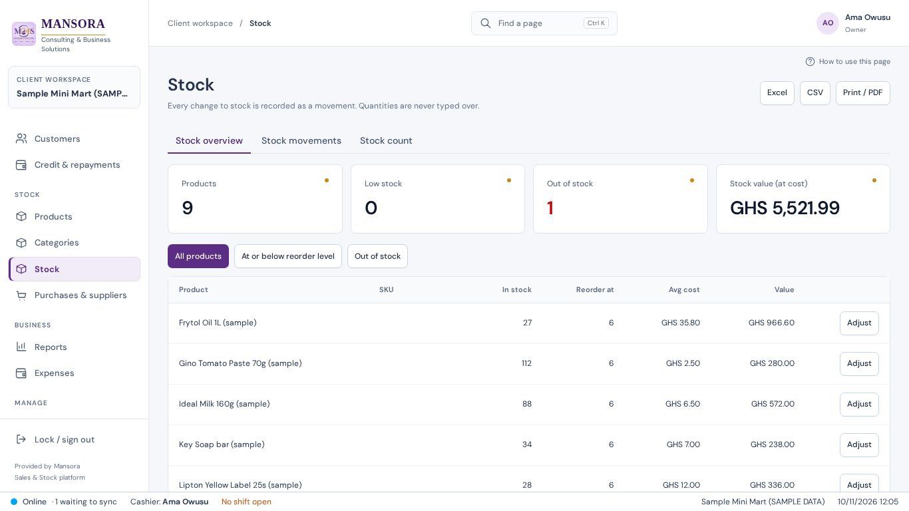</button></figure></div></article><article class="screen"><div class="screen-text"><h3>Purchases and suppliers</h3>
<dl><dt>What it does</dt><dd>When goods arrive, record the supplier, the invoice number and what was received at what cost. Stock goes up and the average cost is updated.</dd><dt>What the client gets</dt><dd>Accurate cost of goods, which makes the profit report meaningful. Cost at the moment of each sale is saved with that sale, so a later price rise does not change old profit figures.</dd><dt>Who can use it</dt><dd>Managers and the owner</dd></dl></div><div class="screen-figs"><figure class="shot"><button type="button" class="zoom" data-src="screenshots/13-purchases.jpg" aria-label="Enlarge: Purchases received from suppliers">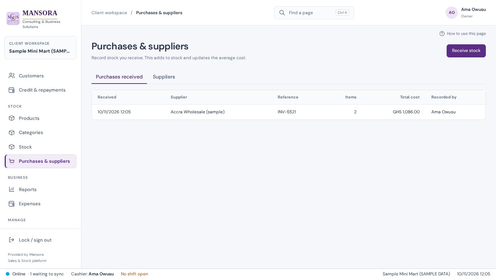</button></figure></div></article><article class="screen"><div class="screen-text"><h3>Import and export</h3>
<dl><dt>What it does</dt><dd>Bring in an existing product list from Excel or CSV. A template is provided. A preview shows errors and duplicates before anything is saved, and opening stock must be confirmed as a physical count. The same file cannot be imported twice, so stock cannot be added twice by mistake. The owner can also download a complete copy of the business's data at any time.</dd><dt>What the client gets</dt><dd>A quick start for onboarding, and the assurance that the data belongs to the business and can leave with it.</dd><dt>Who can use it</dt><dd>Import: managers and the owner. Full export: the owner.</dd></dl></div><div class="screen-figs"><figure class="shot"><button type="button" class="zoom" data-src="screenshots/23-import-export.jpg" aria-label="Enlarge: Import page with template download, file chooser and history">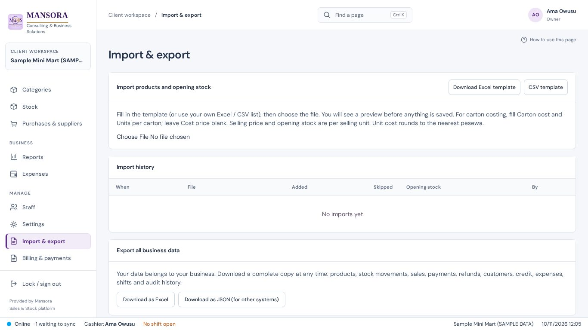</button></figure></div></article></div></section>
<section id="people" class="band alt"><div class="wrap"><p class="kicker">For the client</p><h2>Customers and credit</h2><p class="lede">Many shops sell on credit. These screens keep track of it without mixing it into sales.</p><article class="screen"><div class="screen-text"><h3>Customers</h3>
<dl><dt>What it does</dt><dd>An optional list of customers with a name and, if wanted, a phone number. Walk-in sales need no customer.</dd><dt>What the client gets</dt><dd>Collect only necessary customer details. Ordinary support reports exclude customer contacts; synchronized records, backups and privileged hosting access still require appropriate privacy controls.</dd><dt>Who can use it</dt><dd>Managers and the owner</dd></dl></div><div class="screen-figs"><figure class="shot"><button type="button" class="zoom" data-src="screenshots/14-customers.jpg" aria-label="Enlarge: Customer list showing who owes money">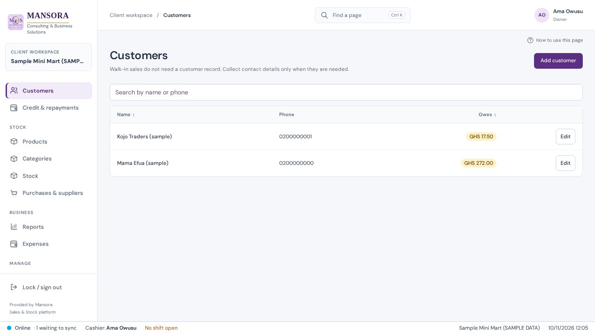</button></figure></div></article><article class="screen"><div class="screen-text"><h3>Credit and repayments</h3>
<dl><dt>What it does</dt><dd>Sales on credit are tracked per customer with an optional due date. A customer can pay back in parts, by cash, mobile money or card. Overdue amounts are highlighted.</dd><dt>What the client gets</dt><dd>A clear answer to who owes the shop what. A repayment lowers the amount owed and is never counted as a new sale, and a cash repayment is included in that day's till check.</dd><dt>Who can use it</dt><dd>Managers and the owner</dd></dl></div><div class="screen-figs"><figure class="shot"><button type="button" class="zoom" data-src="screenshots/15-credit.jpg" aria-label="Enlarge: Credit page with total owed, overdue amount and a list of who owes what">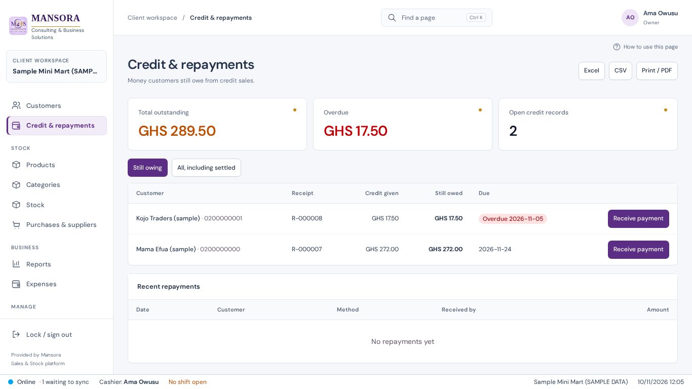</button></figure></div></article></div></section>
<section id="view" class="band"><div class="wrap"><p class="kicker">For the client</p><h2>Results at a glance</h2><p class="lede">What the owner wants to know: how much was sold, how customers paid, what is running low and what profit was made.</p><article class="screen"><div class="screen-text"><h3>Dashboard</h3>
<dl><dt>What it does</dt><dd>The first screen an owner sees. Sales today and this month, how customers paid, what is running low, how much credit is owed and the latest sales.</dd><dt>What the client gets</dt><dd>The answer to "how are we doing" in a few seconds, without opening a report. A cashier sees only their own sales here.</dd><dt>Who can use it</dt><dd>Everyone, with different amounts of detail</dd></dl></div><div class="screen-figs"><figure class="shot"><button type="button" class="zoom" data-src="screenshots/10-dashboard.jpg" aria-label="Enlarge: Dashboard with sales today, this month, credit owed, how customers paid and recent sales">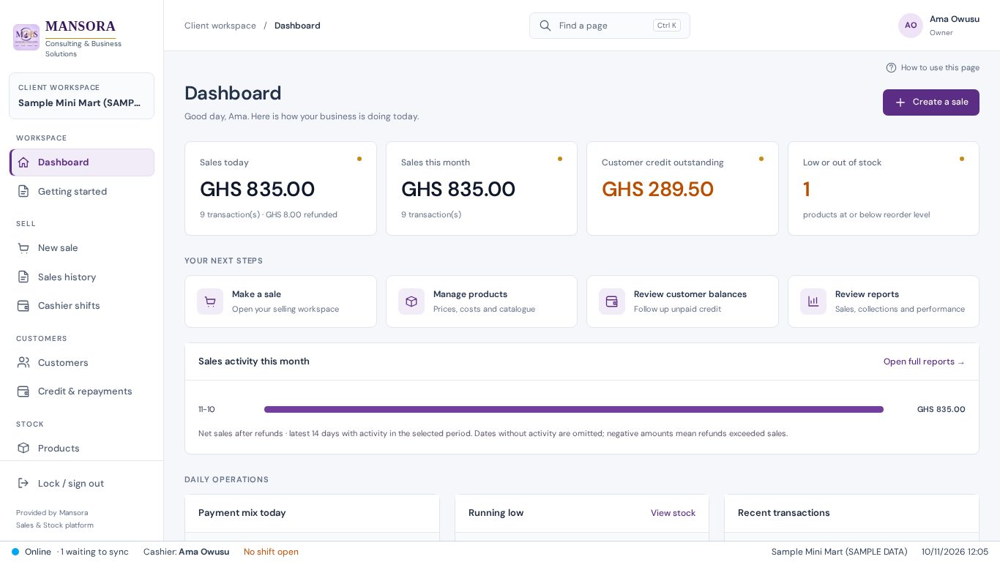</button></figure></div></article><article class="screen"><div class="screen-text"><h3>Reports</h3>
<dl><dt>What it does</dt><dd>Sales by day, product and cashier. Payments by method, including refunds and repayments. Gross profit by product. Stock, damages and adjustments. Any report can go to Excel or CSV or be printed. Reports use the records on the laptop, so they work with no internet.</dd><dt>What the client gets</dt><dd>Gross profit means sales minus the cost of the goods sold. Expenses are listed next to it and are not subtracted. In this sample the margin is thin because one torn bag was refunded and written off.</dd><dt>Who can use it</dt><dd>Sales and payment reports: managers and the owner. Profit reports: those with the cost permission, by default managers and the owner.</dd></dl></div><div class="screen-figs"><figure class="shot"><button type="button" class="zoom" data-src="screenshots/18-reports-sales.jpg" aria-label="Enlarge: Sales report with daily totals and best-selling products">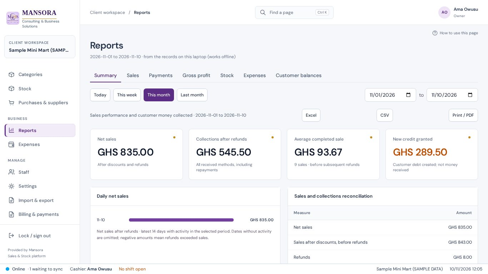</button></figure><figure class="shot"><button type="button" class="zoom" data-src="screenshots/19-reports-payments.jpg" aria-label="Enlarge: Payments report by method">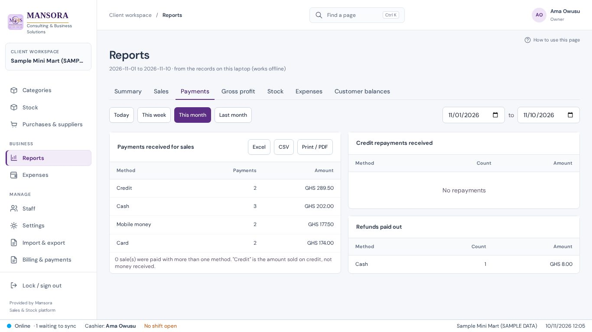</button></figure><figure class="shot"><button type="button" class="zoom" data-src="screenshots/20-reports-profit.jpg" aria-label="Enlarge: Gross profit report by product">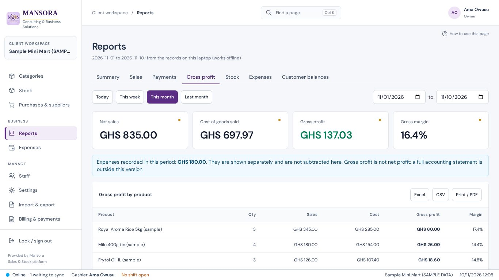</button></figure></div></article></div></section>
<section id="control" class="band alt"><div class="wrap"><p class="kicker">For the client</p><h2>Control for the owner</h2><p class="lede">How the owner decides who can do what, and keeps a trail of everything.</p><article class="screen"><div class="screen-text"><h3>Staff and permissions</h3>
<dl><dt>What it does</dt><dd>The owner adds each person and ticks what they may do. A login can be switched off the day someone leaves, and it takes effect straight away.</dd><dt>What the client gets</dt><dd>Control over who can discount, refund, see costs, adjust stock or see reports, with a record of who did what.</dd><dt>Who can use it</dt><dd>The owner only</dd></dl></div><div class="screen-figs"><figure class="shot"><button type="button" class="zoom" data-src="screenshots/21-staff.jpg" aria-label="Enlarge: Staff list with roles and status">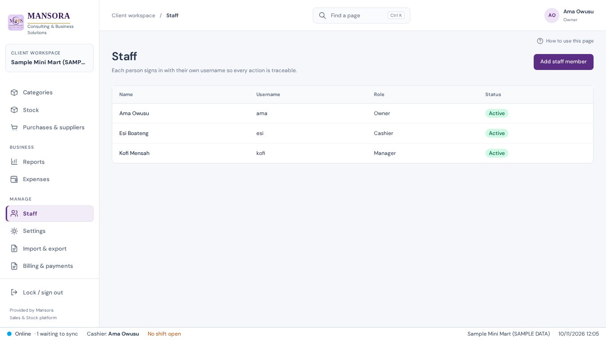</button></figure><figure class="shot"><button type="button" class="zoom" data-src="screenshots/22-staff-permissions.jpg" aria-label="Enlarge: Permission checkboxes for one staff member">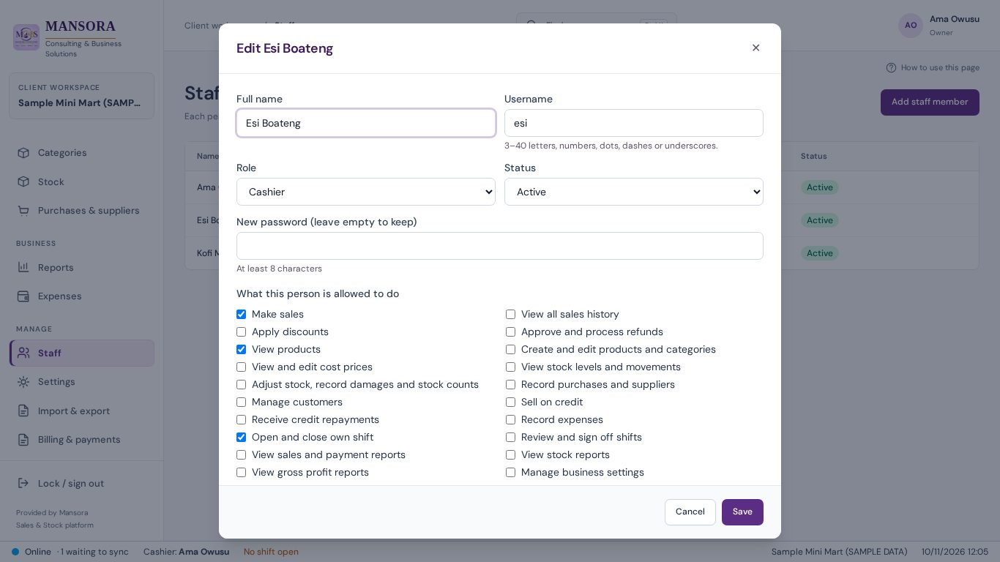</button></figure></div></article><article class="screen"><div class="screen-text"><h3>Settings</h3>
<dl><dt>What it does</dt><dd>The business name, phone and address printed on receipts, the receipt footer message, how quickly the screen locks, and an optional discount limit. Above that limit only the owner can approve a discount.</dd><dt>What the client gets</dt><dd>Receipts that look like the shop's own, and a simple way to cap discounting if the owner wants one. Review and approve the configured limit before staff begin trading.</dd><dt>Who can use it</dt><dd>The owner</dd></dl></div><div class="screen-figs"><figure class="shot"><button type="button" class="zoom" data-src="screenshots/24-settings.jpg" aria-label="Enlarge: Settings page with business profile, lock time and discount limit">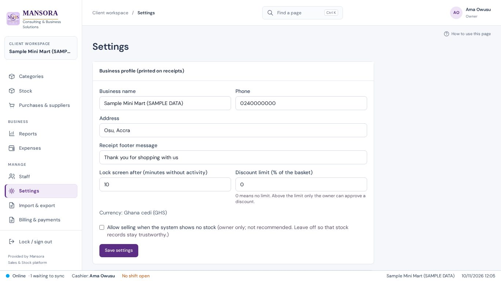</button></figure></div></article><article class="screen"><div class="screen-text"><h3>Audit history</h3>
<dl><dt>What it does</dt><dd>A permanent list of who did what and when: sales, refunds, price changes, stock adjustments, staff changes and also actions that were refused.</dd><dt>What the client gets</dt><dd>A trail that cannot be edited or deleted, useful if there is ever a dispute or suspected theft.</dd><dt>Who can use it</dt><dd>The owner</dd></dl></div><div class="screen-figs"><figure class="shot"><button type="button" class="zoom" data-src="screenshots/28-audit.jpg" aria-label="Enlarge: Audit history listing actions, who did them and when">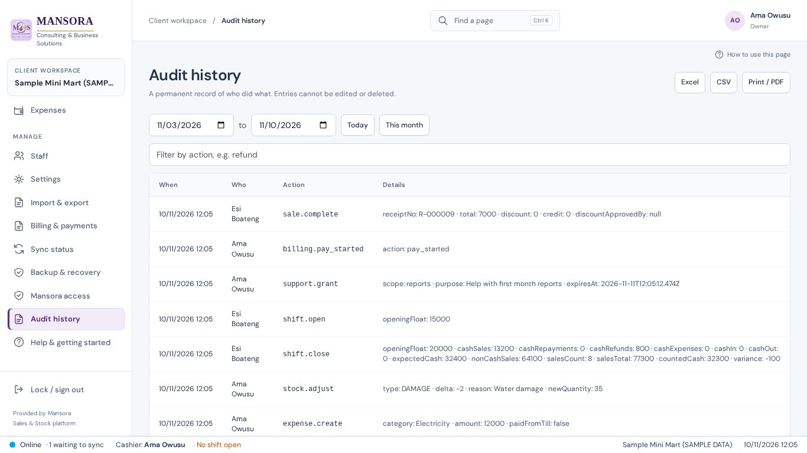</button></figure></div></article></div></section>
<section id="safety" class="band"><div class="wrap"><p class="kicker">For the client</p><h2>Staying connected and safe</h2><p class="lede">Keeping records safe when the internet is poor, and keeping Mansora out of the shop's data unless invited.</p><article class="screen"><div class="screen-text"><h3>Sync status</h3>
<dl><dt>What it does</dt><dd>Shows whether the laptop is online, how many records are waiting to be sent to the Mansora cloud, and when the last successful send was. The status bar at the bottom of every screen shows the same in brief.</dd><dt>What the client gets</dt><dd>Confidence that the shop keeps trading when the internet drops, and a warning if there are records that exist only on this laptop.</dd><dt>Who can use it</dt><dd>Everyone can look. The owner has repair tools.</dd></dl></div><div class="screen-figs"><figure class="shot"><button type="button" class="zoom" data-src="screenshots/25-sync.jpg" aria-label="Enlarge: Sync status showing connection, waiting records and last successful sync">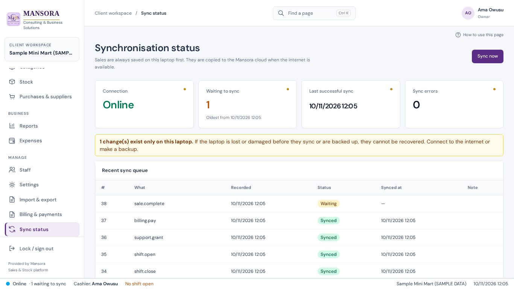</button></figure></div></article><article class="screen"><div class="screen-text"><h3>Backup and recovery</h3>
<dl><dt>What it does</dt><dd>The owner can make an encrypted backup file that is protected by a passphrase only they know, test that a backup opens, and switch on a daily automatic backup. A copy is also sent to the Mansora cloud when online.</dd><dt>What the client gets</dt><dd>A way back if the laptop is lost. Not even Mansora can open a backup without the owner's passphrase, and a forgotten passphrase cannot be recovered.</dd><dt>Who can use it</dt><dd>The owner</dd></dl></div><div class="screen-figs"><figure class="shot"><button type="button" class="zoom" data-src="screenshots/26-backup.jpg" aria-label="Enlarge: Backup page with passphrase fields and automatic backup option">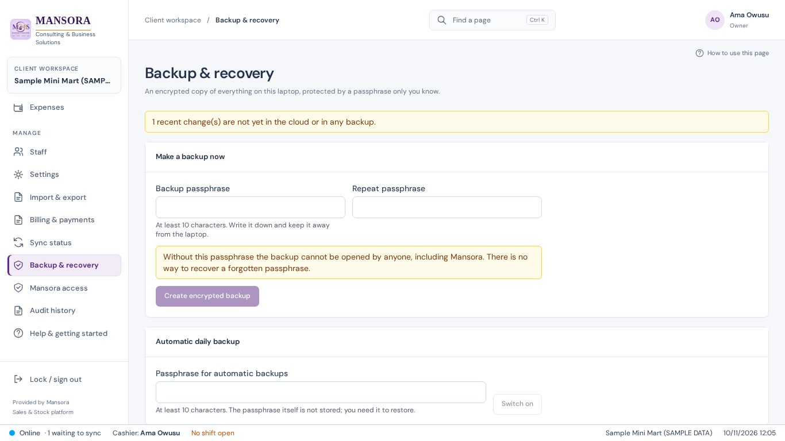</button></figure></div></article><article class="screen"><div class="screen-text"><h3>Mansora access</h3>
<dl><dt>What it does</dt><dd>The ordinary Mansora support dashboard does not expose shop sales reports without an owner grant. To get help, the owner can allow report viewing for a chosen time (one hour to three days) and a stated reason, and can stop it at any moment. Every look is listed on the owner's screen with the name of the person.</dd><dt>What the client gets</dt><dd>Support without giving up privacy. The support report projection covers selected sales totals, payment methods, top products and stock counts. It excludes customer contacts and staff passwords; this does not describe privileged database or hosting access.</dd><dt>Who can use it</dt><dd>The owner decides. Mansora can only look while permission is active.</dd></dl></div><div class="screen-figs"><figure class="shot"><button type="button" class="zoom" data-src="screenshots/27-owner-grants-access.jpg" aria-label="Enlarge: Owner granting Mansora temporary access to reports">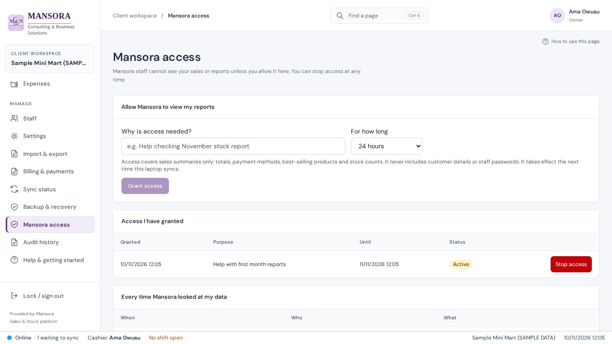</button></figure><figure class="shot"><button type="button" class="zoom" data-src="screenshots/27b-owner-sees-access-log.jpg" aria-label="Enlarge: Owner&#x27;s log showing that a Mansora administrator viewed the data">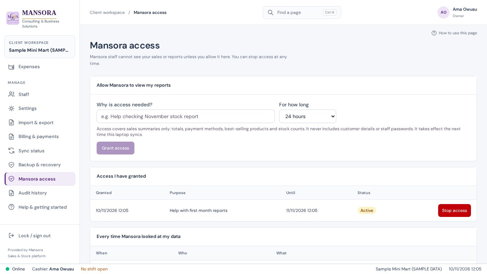</button></figure></div></article></div></section>

<section id="roles" class="band alt"><div class="wrap">
<p class="kicker">Access</p><h2>Who can do what</h2>
<p class="lede">These are the starting settings for each role. The owner can change them person by person.</p>
<div class="tablewrap"><table><thead><tr><th scope="col">Action</th><th scope="col">Owner</th><th scope="col">Manager</th><th scope="col">Cashier</th></tr></thead><tbody><tr><th scope="row">Sell and print receipts</th><td class="y"><span>Yes</span></td><td class="y"><span>Yes</span></td><td class="y"><span>Yes</span></td></tr><tr><th scope="row">Open and close their own shift</th><td class="y"><span>Yes</span></td><td class="y"><span>Yes</span></td><td class="y"><span>Yes</span></td></tr><tr><th scope="row">See selling prices</th><td class="y"><span>Yes</span></td><td class="y"><span>Yes</span></td><td class="y"><span>Yes</span></td></tr><tr><th scope="row">See cost prices and profit reports</th><td class="y"><span>Yes</span></td><td class="y"><span>Yes</span></td><td class="n"><span>No</span></td></tr><tr><th scope="row">Give a discount</th><td class="y"><span>Yes</span></td><td class="y"><span>Yes</span></td><td class="a"><span>With a manager</span></td></tr><tr><th scope="row">Refund a sale</th><td class="y"><span>Yes</span></td><td class="y"><span>Yes</span></td><td class="a"><span>With a manager</span></td></tr><tr><th scope="row">Sell on credit</th><td class="y"><span>Yes</span></td><td class="y"><span>Yes</span></td><td class="a"><span>With a manager</span></td></tr><tr><th scope="row">Take credit repayments</th><td class="y"><span>Yes</span></td><td class="y"><span>Yes</span></td><td class="n"><span>No</span></td></tr><tr><th scope="row">Add and change products, receive stock, adjust stock</th><td class="y"><span>Yes</span></td><td class="y"><span>Yes</span></td><td class="n"><span>No</span></td></tr><tr><th scope="row">Record expenses</th><td class="y"><span>Yes</span></td><td class="y"><span>Yes</span></td><td class="n"><span>No</span></td></tr><tr><th scope="row">Sign off a shift (not their own)</th><td class="y"><span>Yes</span></td><td class="y"><span>Yes</span></td><td class="n"><span>No</span></td></tr><tr><th scope="row">Add staff and change what they can do</th><td class="y"><span>Yes</span></td><td class="n"><span>No</span></td><td class="n"><span>No</span></td></tr><tr><th scope="row">Change settings, make backups, export all data, see audit history</th><td class="y"><span>Yes</span></td><td class="n"><span>No</span></td><td class="n"><span>No</span></td></tr><tr><th scope="row">Pay Mansora invoices and manage automatic payments</th><td class="y"><span>Yes</span></td><td class="n"><span>No</span></td><td class="n"><span>No</span></td></tr><tr><th scope="row">Allow Mansora to view reports</th><td class="y"><span>Yes</span></td><td class="n"><span>No</span></td><td class="n"><span>No</span></td></tr></tbody></table></div>
<p class="aside"><strong>With a manager</strong> means the cashier stays on their own screen and a manager types their own username and password into a window to approve that one action. The system records who approved it. These limits are enforced inside the system, so hiding a button is not the only protection.</p>
</div></section>

<section id="trouble" class="band"><div class="wrap">
<p class="kicker">Resilience</p><h2>When things go wrong</h2>
<p class="lede">The questions owners ask most, and what actually happens.</p>
<div class="problems">
<div class="problem"><h3>The internet goes off</h3><p>Nothing changes for the cashier. The bar at the bottom shows Offline and how many records are waiting. They are sent automatically later.</p></div>
<div class="problem"><h3>Power cut or the app crashes mid-sale</h3><p>Finished sales are safe. A half-finished sale does not exist, so there is never a partial record or missing stock entry.</p></div>
<div class="problem"><h3>The printer fails</h3><p>The sale is already saved. Print it again from Sales history, or save it as a PDF.</p></div>
<div class="problem"><h3>A sale was rung up wrongly</h3><p>It cannot be edited. Refund it, with a manager's approval and a reason, and ring it up again. Both records stay.</p></div>
<div class="problem"><h3>The owner forgets their password</h3><p>Mansora verifies the owner and gives a one-time code that works for one hour on that shop's laptop. The owner chooses a new password. Mansora never sees it.</p></div>
<div class="problem"><h3>A staff member leaves</h3><p>The owner switches off the login. It stops working at once, even if they are signed in.</p></div>
<div class="problem"><h3>The laptop is lost, stolen or broken</h3><p>Mansora deactivates it so it cannot send data. On a new laptop the owner restores their backup file, or Mansora rebuilds the shop from the cloud copy. Other staff then need new passwords.</p></div>
<div class="problem"><h3>What cannot be recovered</h3><p>Records made after the last cloud sync and the last backup, if the laptop is destroyed. The app warns when such records exist, and a daily automatic backup narrows the gap.</p></div>
</div></div></section>

<section id="mansora" class="band alt"><div class="wrap">
<p class="kicker">For Mansora's team</p><h2>The administrator dashboard</h2>
<p class="lede">A separate website, used only by Mansora staff, for setting clients up and looking after them. It is built so that staff can help clients without being able to read their business.</p>
<div class="limits">
<div class="can"><h3>Mansora staff can</h3><ul><li>Create clients and plans</li><li>Create activation codes and connect laptops</li><li>Track the twelve onboarding steps</li><li>See each client's health: online, last sync, waiting records, version, last backup</li><li>Give an owner a one-time password recovery code</li><li>Deactivate a lost laptop</li><li>View a sales summary while the owner allows it</li></ul></div>
<div class="cannot"><h3>Mansora staff cannot</h3><ul><li>See any client's sales without the owner's permission</li><li>Ever see customers' personal details or staff passwords</li><li>Edit or delete a client's records</li><li>Set or read anyone's password</li><li>Stop a shop from selling, whatever the plan status</li><li>Open a client's backup file</li></ul></div>
</div>
<article class="screen"><div class="screen-text"><h3>Overview</h3>
<dl><dt>What it does</dt><dd>Number of clients and how many are live or being set up, renewals due in the next 30 days, onboarding progress, and live clients that need attention because the laptop has not synced for 48 hours or has not made a backup for a week.</dd><dt>What the client gets</dt><dd>A morning check of which shops need a call. No sales or money figures from any client appear on this page.</dd><dt>Who can use it</dt><dd>Mansora administrators</dd></dl></div><div class="screen-figs"><figure class="shot"><button type="button" class="zoom" data-src="screenshots/30-admin-overview.jpg" aria-label="Enlarge: Admin overview with client counts, renewals, onboarding progress and clients needing attention">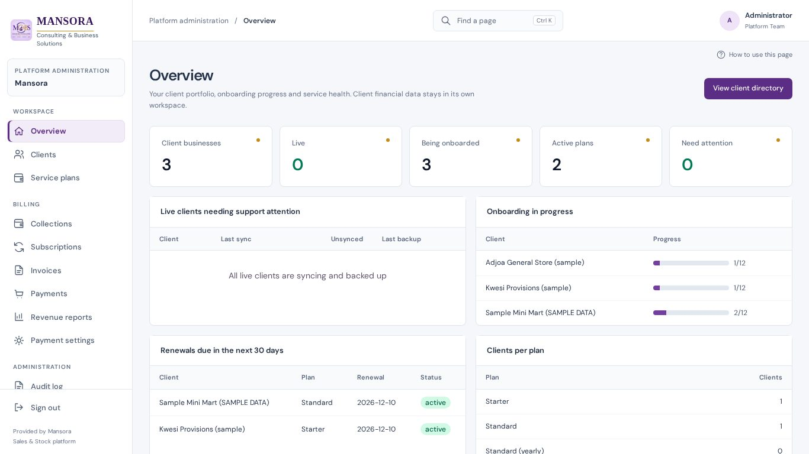</button></figure></div></article><article class="screen"><div class="screen-text"><h3>Client directory</h3>
<dl><dt>What it does</dt><dd>Every client in one list: status, plan, how far through setup, whether the laptop is online, when it last synced, how many records are waiting and which version of the app it runs. "Offline" is normal for a shop with poor internet.</dd><dt>What the client gets</dt><dd>One view of every shop's health, and a place to add a new client.</dd><dt>Who can use it</dt><dd>Mansora administrators</dd></dl></div><div class="screen-figs"><figure class="shot"><button type="button" class="zoom" data-src="screenshots/31-admin-clients.jpg" aria-label="Enlarge: List of clients with status, plan, setup progress, laptop status, last sync and version">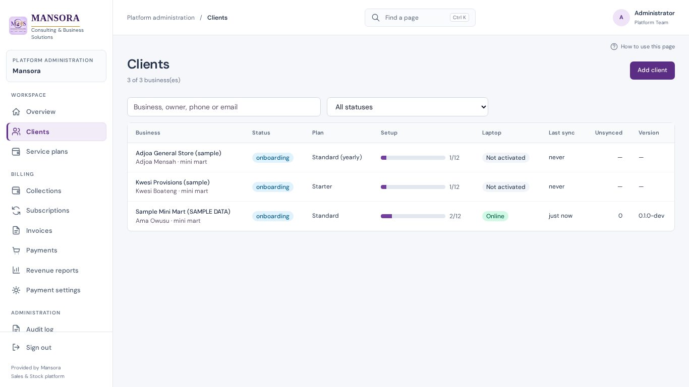</button></figure></div></article><article class="screen"><div class="screen-text"><h3>Client page</h3>
<dl><dt>What it does</dt><dd>Everything about one client: the twelve onboarding steps to tick off, health, activation code, deactivating a laptop, owner recovery code, service plan and report access.</dd><dt>What the client gets</dt><dd>The single page used to onboard and support a client. Each tick records who ticked it and when.</dd><dt>Who can use it</dt><dd>Mansora administrators</dd></dl></div><div class="screen-figs"><figure class="shot"><button type="button" class="zoom" data-src="screenshots/32-admin-client.jpg" aria-label="Enlarge: Client page with the twelve-step onboarding checklist, health, plan and report access">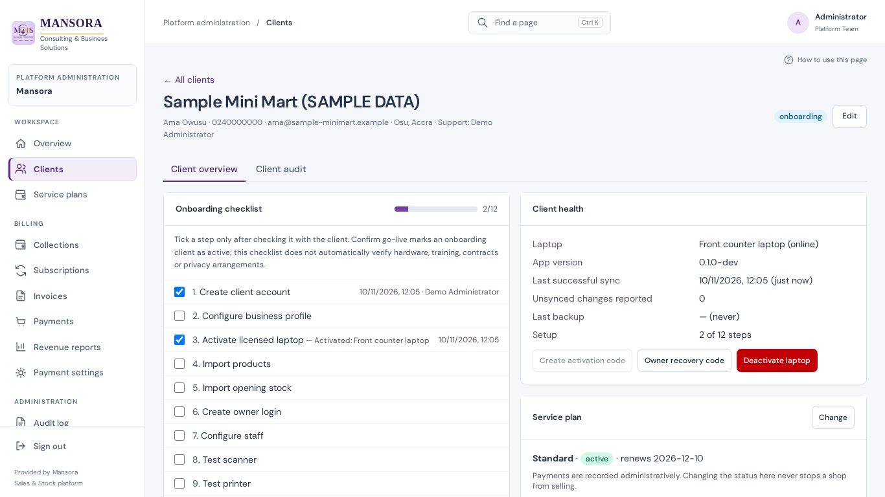</button></figure></div></article><article class="screen"><div class="screen-text"><h3>Activation codes</h3>
<dl><dt>What it does</dt><dd>Creates a one-time code for the shop's laptop. It works once and expires after 72 hours. It is shown once and only a scrambled form is stored. Each shop can have one active laptop.</dd><dt>What the client gets</dt><dd>A safe way to connect a laptop to the right client, with no passwords exchanged.</dd><dt>Who can use it</dt><dd>Mansora administrators</dd></dl></div><div class="screen-figs"><figure class="shot"><button type="button" class="zoom" data-src="screenshots/34-admin-activation-code.jpg" aria-label="Enlarge: Activation code shown once to the administrator">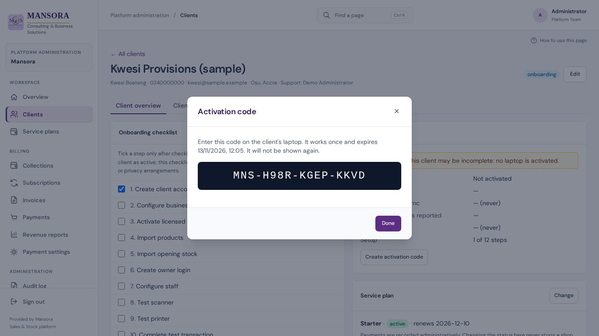</button></figure></div></article><article class="screen"><div class="screen-text"><h3>Owner password recovery</h3>
<dl><dt>What it does</dt><dd>If an owner forgets their password, an administrator verifies who they are, records how, and creates a one-time code valid for one hour. The owner types it on their own laptop and chooses a new password themselves.</dd><dt>What the client gets</dt><dd>Recovery without Mansora ever knowing or setting the password. The request is recorded in the audit log.</dd><dt>Who can use it</dt><dd>Mansora administrators, after verifying the owner</dd></dl></div><div class="screen-figs"><figure class="shot"><button type="button" class="zoom" data-src="screenshots/35-admin-recovery.jpg" aria-label="Enlarge: Recovery code window asking how the owner was verified">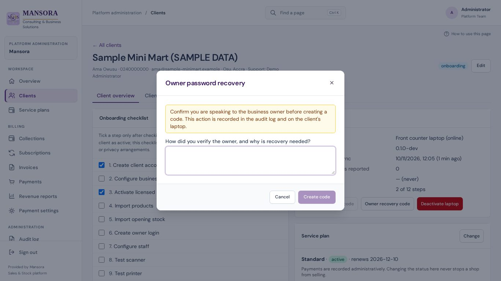</button></figure></div></article><article class="screen"><div class="screen-text"><h3>Report access: with permission</h3>
<dl><dt>What it does</dt><dd>When the owner has granted access, the administrator can open a sales summary for chosen dates. A banner states the reason and expiry, and a warning appears if the laptop has records that have not synced yet.</dd><dt>What the client gets</dt><dd>Support staff can help with a real figure in front of them. Every view is logged for the owner and for Mansora.</dd><dt>Who can use it</dt><dd>Mansora administrators, only while permission is active</dd></dl></div><div class="screen-figs"><figure class="shot"><button type="button" class="zoom" data-src="screenshots/33-admin-reports-with-consent.jpg" aria-label="Enlarge: Admin client page showing a sales summary because the owner allowed access">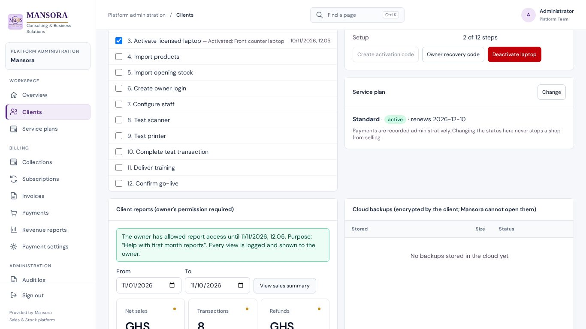</button></figure></div></article><article class="screen"><div class="screen-text"><h3>Report access: without permission</h3>
<dl><dt>What it does</dt><dd>The same button, with no permission. The system refuses, and the refused attempt is itself recorded.</dd><dt>What the client gets</dt><dd>The assurance clients need before they trust a supplier with their sales.</dd><dt>Who can use it</dt><dd>Nobody can bypass it</dd></dl></div><div class="screen-figs"><figure class="shot"><button type="button" class="zoom" data-src="screenshots/38-admin-no-consent.jpg" aria-label="Enlarge: Admin client page refusing to show a summary because the owner has not granted access">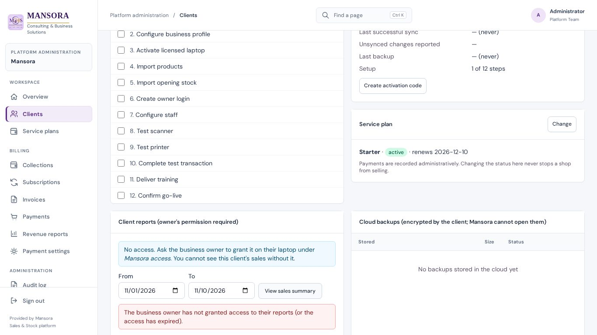</button></figure></div></article><article class="screen"><div class="screen-text"><h3>Service plans</h3>
<dl><dt>What it does</dt><dd>Define the plans on offer: name, price, monthly, quarterly or yearly billing, and what support is included. Assign a plan to a client with a status and renewal date. The prices shown here are examples only.</dd><dt>What the client gets</dt><dd>A record of who is on which plan and when it renews. Billing for each plan is on the Getting paid screens below, and a plan status never stops a shop from selling.</dd><dt>Who can use it</dt><dd>Mansora administrators</dd></dl></div><div class="screen-figs"><figure class="shot"><button type="button" class="zoom" data-src="screenshots/36-admin-plans.jpg" aria-label="Enlarge: Service plans with price, billing period and included support">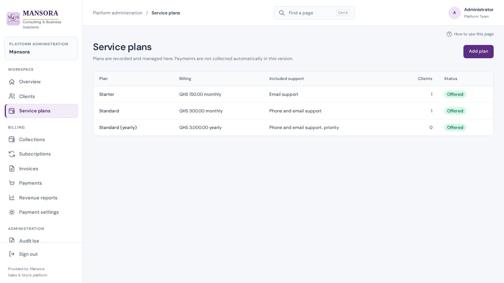</button></figure></div></article><article class="screen"><div class="screen-text"><h3>Administrator audit log</h3>
<dl><dt>What it does</dt><dd>Everything an administrator does is listed: creating clients, issuing codes, deactivating laptops, recovery codes, viewing reports and refused attempts. Administrator sign-in can also be protected by an authenticator app (two-factor).</dd><dt>What the client gets</dt><dd>Accountability for Mansora's own staff, which is a selling point to clients.</dd><dt>Who can use it</dt><dd>Mansora administrators</dd></dl></div><div class="screen-figs"><figure class="shot"><button type="button" class="zoom" data-src="screenshots/37-admin-audit.jpg" aria-label="Enlarge: Audit log of administrator actions including report views and refused attempts">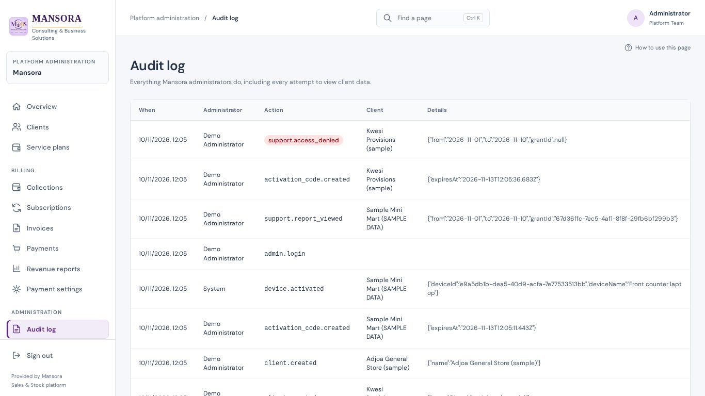</button></figure></div></article>
</div></section>

<section id="billing" class="band"><div class="wrap"><p class="kicker">New: how Mansora gets paid</p><h2>Subscriptions, invoices and collections</h2><p class="lede">Mansora can now bill its own clients from the same platform: set a plan, send an invoice before each renewal, take payment on the payment provider&#x27;s own secure page, and see who has paid and who has not. <strong>This is built and tested with a practice (sandbox) payment provider only. No real money has moved yet</strong> (see Where we are).</p><article class="screen"><div class="screen-text"><h3>The client&#x27;s Billing &amp; payments screen<span class="tag">Client</span></h3>
<dl><dt>What it does</dt><dd>The owner sees their plan, the fee, what is due and when, and can pay now. They can set up automatic payments or cancel them, ask Mansora to cancel their subscription, and print or save every invoice and receipt. Paying opens the payment provider&#x27;s own page in the browser: card numbers and PINs are never typed into Mansora. With no internet it shows what Mansora last said, clearly marked, and any action that needs the internet says so.</dd><dt>What the client gets</dt><dd>The owner always knows what they owe and has a receipt for every payment. Nothing is charged without their approval, and never more than an invoice they have been sent.</dd><dt>Who can use it</dt><dd>The owner by default. A manager or cashier cannot see or pay Mansora invoices unless the owner allows it.</dd></dl></div><div class="screen-figs"><figure class="shot"><button type="button" class="zoom" data-src="screenshots/60-client-billing.jpg" aria-label="Enlarge: Billing and payments screen showing the plan, fee, next payment, invoices and receipts">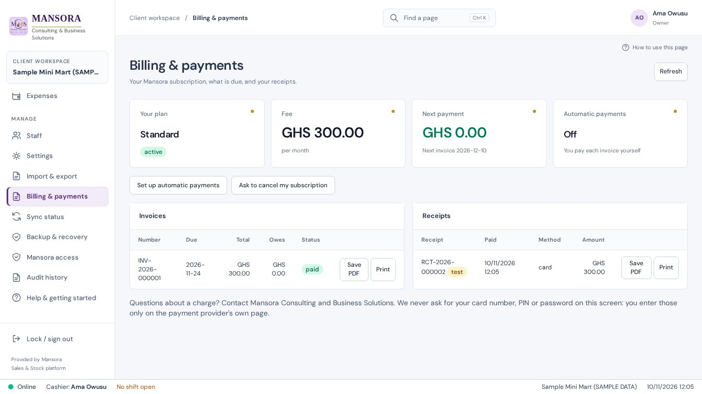</button></figure></div></article><article class="screen"><div class="screen-text"><h3>Collections: who owes what<span class="tag">Mansora</span></h3>
<dl><dt>What it does</dt><dd>One row per client with the plan, fee, how they pay, last and next payment, what they owe, how many days late, and whether automatic payment is set up. Filters show overdue, failed, upcoming and disputed clients. A Manage button gives the common actions: send a reminder, copy a payment link, record a payment received outside the provider, retry a collection, change plan, pause, and view the history. A &#x27;Needs review&#x27; tab lists anything where Mansora&#x27;s records and a provider&#x27;s do not match.</dd><dt>What the client gets</dt><dd>The first screen to open each morning. An overdue client is visible at once, and nothing is ever suspended automatically: a person decides.</dd><dt>Who can use it</dt><dd>Mansora administrators</dd></dl></div><div class="screen-figs"><figure class="shot"><button type="button" class="zoom" data-src="screenshots/40-admin-collections.jpg" aria-label="Enlarge: Collections table showing each client, fee, last and next payment, amount owed and days late">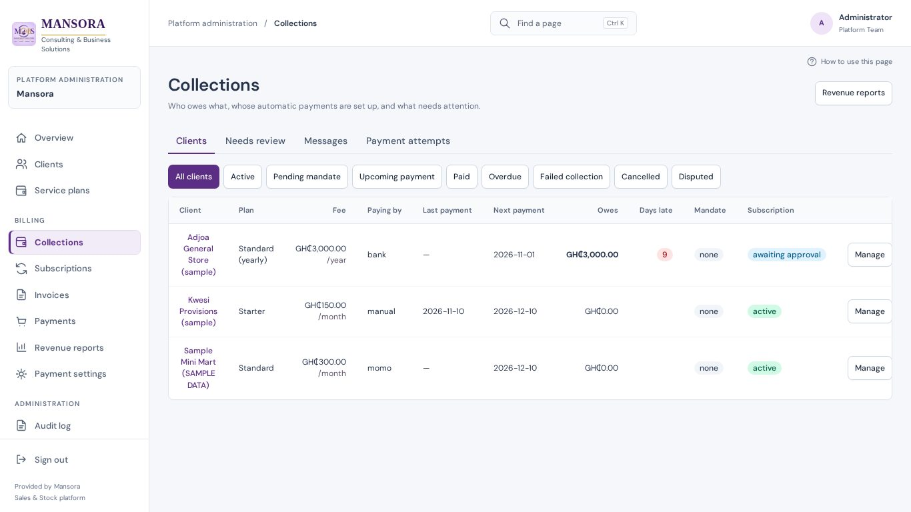</button></figure><figure class="shot"><button type="button" class="zoom" data-src="screenshots/41-admin-collections-manage.jpg" aria-label="Enlarge: Manage window with actions for one client: reminder, payment link, record payment, retry, change plan, pause">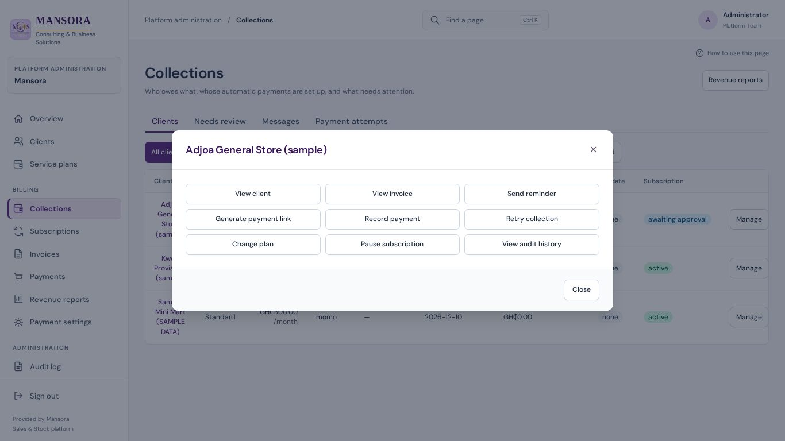</button></figure></div></article><article class="screen"><div class="screen-text"><h3>Subscriptions and invoices<span class="tag">Mansora</span></h3>
<dl><dt>What it does</dt><dd>A subscription records what a client has agreed to pay and where it stands (draft, awaiting approval, active, paused, cancelled). Submitting it issues the first invoice. After that an invoice is created automatically a week before each renewal, once per period, never twice. An invoice shows its lines, payments, payment attempts, reminders and full history, and can be cancelled, credited, written off or marked disputed.</dd><dt>What the client gets</dt><dd>A price change never rewrites an invoice already sent. Every change records who made it and why.</dd><dt>Who can use it</dt><dd>Mansora administrators</dd></dl></div><div class="screen-figs"><figure class="shot"><button type="button" class="zoom" data-src="screenshots/42-admin-subscriptions.jpg" aria-label="Enlarge: Subscriptions list with client, plan, agreed fee, next billing date, payment method and status">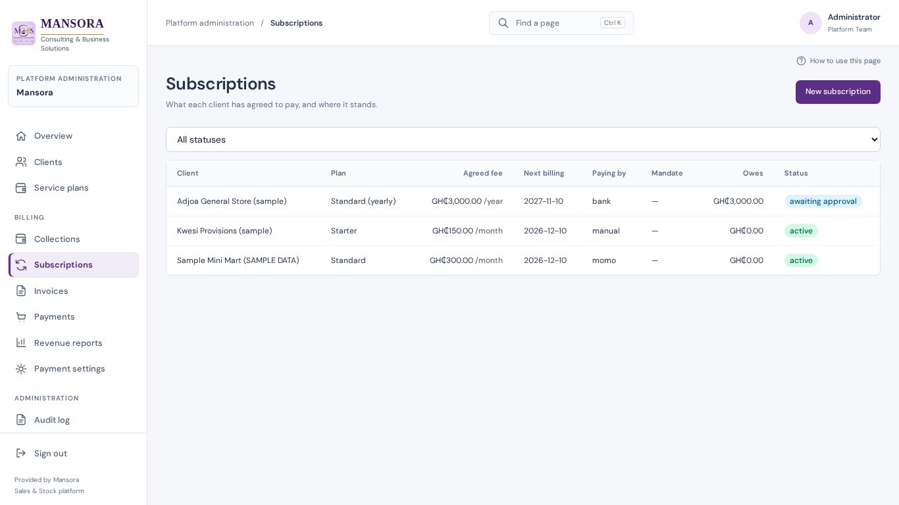</button></figure><figure class="shot"><button type="button" class="zoom" data-src="screenshots/43-admin-invoices.jpg" aria-label="Enlarge: Invoices list with number, client, dates, total, balance and status">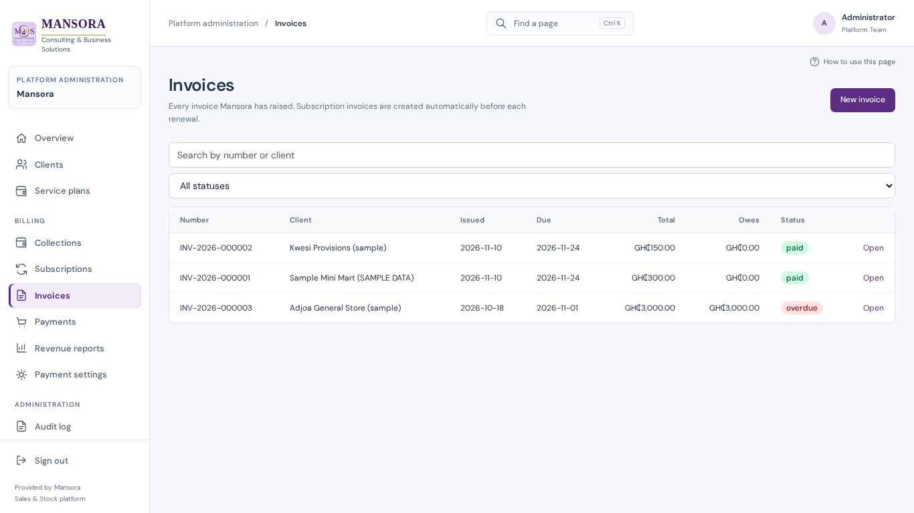</button></figure><figure class="shot"><button type="button" class="zoom" data-src="screenshots/44-admin-invoice-detail.jpg" aria-label="Enlarge: One invoice with lines, payments, attempts, reminders and the actions available">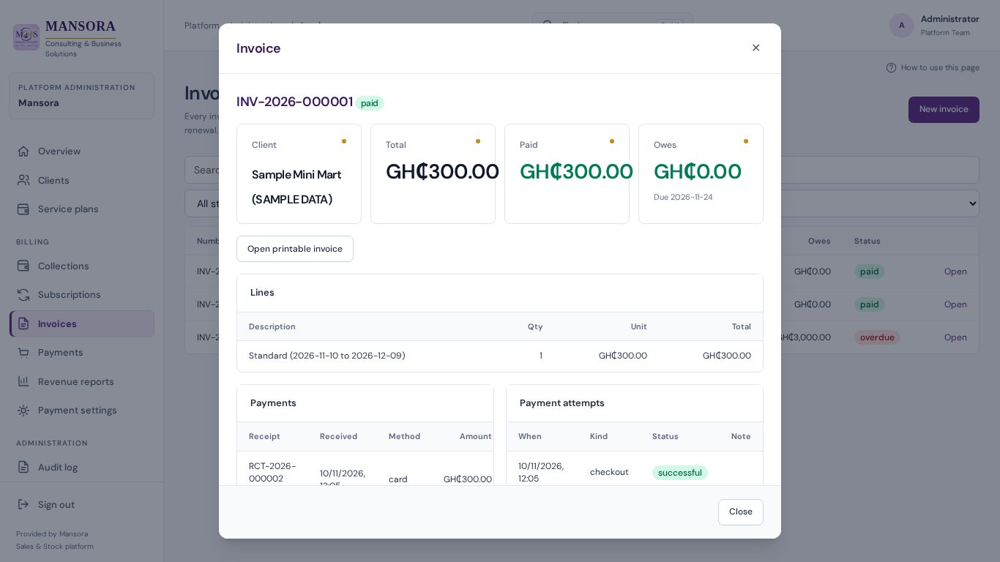</button></figure></div></article><article class="screen"><div class="screen-text"><h3>Payments and revenue reports<span class="tag">Mansora</span></h3>
<dl><dt>What it does</dt><dd>Payments lists every receipt, with refunds and whether the provider has paid it out. Revenue reports show monthly and yearly recurring revenue, cash collected, what is expected this month, overdue money, how old the overdue amounts are, failed and successful payment rates, and revenue by client and by service. Everything exports to CSV. Practice (sandbox) payments are counted in none of these figures.</dd><dt>What the client gets</dt><dd>Cash received, money invoiced and money still owed are kept separate, so the numbers cannot flatter. No profit figure is shown because Mansora&#x27;s own costs are not in the system.</dd><dt>Who can use it</dt><dd>Mansora administrators</dd></dl></div><div class="screen-figs"><figure class="shot"><button type="button" class="zoom" data-src="screenshots/45-admin-payments.jpg" aria-label="Enlarge: Payments list with receipt numbers, methods, amounts, refunds and payout status">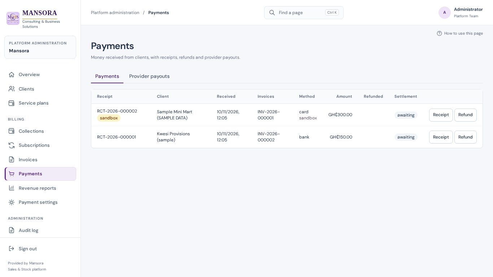</button></figure><figure class="shot"><button type="button" class="zoom" data-src="screenshots/46-admin-revenue.jpg" aria-label="Enlarge: Revenue report with recurring revenue, collected, overdue, ageing and by-client tables">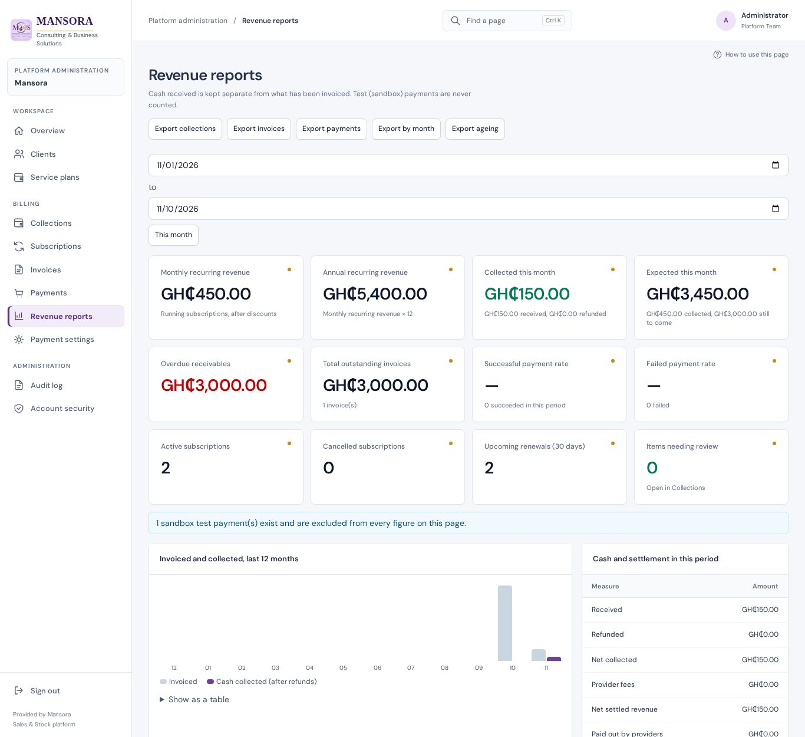</button></figure></div></article><article class="screen"><div class="screen-text"><h3>Payment settings<span class="tag">Mansora</span></h3>
<dl><dt>What it does</dt><dd>Shows which payment providers are connected and which are blocked, and what each is waiting for. It also holds the rules (invoice created 7 days ahead, due after 14 days, up to 3 automatic attempts 3 days apart), the reminder schedule, and the business details printed on invoices.</dd><dt>What the client gets</dt><dd>No provider ever pretends to be connected. A blocked one says exactly what it needs, for example a merchant account or a key.</dd><dt>Who can use it</dt><dd>Mansora administrators</dd></dl></div><div class="screen-figs"><figure class="shot"><button type="button" class="zoom" data-src="screenshots/47-admin-payment-settings.jpg" aria-label="Enlarge: Payment settings showing provider status, collection rules, reminder schedule and invoice details">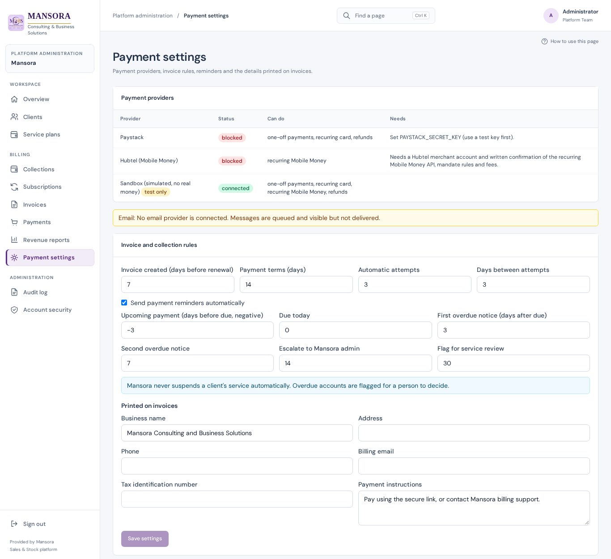</button></figure></div></article></div></section>

<section id="onboarding" class="band"><div class="wrap">
<p class="kicker">For Mansora's team</p><h2>Onboarding a new client</h2>
<p class="lede">The twelve steps tracked on the client page, in the order they usually happen. Numbers match the checklist on screen.</p>
<div class="phase"><h3>Before the visit</h3><ol><li><span class="n">1</span><div><strong>Create the client account</strong><p>Admin dashboard, Clients, Add client. Business name, owner, phone, business type and plan.</p><p class="done">Done when: Ticks itself.</p></div></li><li><span class="n">3a</span><div><strong>Create an activation code</strong><p>Client page, Create activation code. Valid once, for 72 hours. Bring it to the shop.</p><p class="done">Done when: You have the code written down and it has not expired.</p></div></li></ol></div><div class="phase"><h3>At the shop</h3><ol><li><span class="n">3b</span><div><strong>Activate the laptop</strong><p>Install the app, enter the server address and the code. The shop needs internet for this one step.</p><p class="done">Done when: Ticks itself. The client shows as Online.</p></div></li><li><span class="n">6</span><div><strong>Create the owner login</strong><p>Done on the activation screen. The owner chooses their own password and Mansora does not keep it.</p><p class="done">Done when: Tick it when the owner can sign in.</p></div></li><li><span class="n">2</span><div><strong>Set up the business profile</strong><p>Settings: name, phone, address and the message printed at the bottom of receipts.</p><p class="done">Done when: Print a receipt and read it with the owner.</p></div></li><li><span class="n">4</span><div><strong>Import products</strong><p>Import and export: download the template, fill it in, choose the file, check the preview, import.</p><p class="done">Done when: Products appear in the list with correct prices.</p></div></li><li><span class="n">5</span><div><strong>Import opening stock</strong><p>The same file has an opening stock column. The owner counts the shelf and ticks the confirmation.</p><p class="done">Done when: Stock page shows the counted quantities.</p></div></li><li><span class="n">7</span><div><strong>Add staff</strong><p>Staff: one login per person, starting from the Cashier or Manager defaults.</p><p class="done">Done when: Each person has signed in once.</p></div></li><li><span class="n">8</span><div><strong>Test the scanner</strong><p>Scan ten different products quickly, scan one product five times, scan an unknown barcode. Use the hardware test script.</p><p class="done">Done when: All scans add the right item at the right price.</p></div></li><li><span class="n">9</span><div><strong>Test the printer</strong><p>Print a receipt, reprint one, switch the printer off and check that the sale is still saved, then save a PDF.</p><p class="done">Done when: A clear receipt in the owner&#x27;s hands.</p></div></li><li><span class="n">10</span><div><strong>Do a test transaction</strong><p>One cash sale, one refund, close the shift and check that the till figure matches.</p><p class="done">Done when: The till balances. Test sales stay in the record and are corrected by refunds.</p></div></li></ol></div><div class="phase"><h3>Before leaving and after</h3><ol><li><span class="n">11</span><div><strong>Train the team</strong><p>Cashiers use the cashier guide, the owner uses the owner guide. Practise sell, refund and close shift.</p><p class="done">Done when: Each person has done a sale alone.</p></div></li><li><span class="n">12</span><div><strong>Confirm go-live</strong><p>Tick it on the client page. The client changes from onboarding to active.</p><p class="done">Done when: The client shows as active on the overview.</p></div></li></ol></div>
<div class="checklist"><h3>Before you leave the shop</h3><ul>
<li>The owner has made a backup, written the passphrase down and stored it away from the laptop.</li>
<li>Sync status shows Online and nothing waiting.</li>
<li>The owner knows that Mansora cannot see their sales unless they allow it.</li>
<li>The owner knows what is lost if the laptop is destroyed before it syncs or is backed up.</li>
<li>The owner understands that test sales stay in the record and are corrected with refunds.</li></ul></div>
</div></section>

<section id="faq" class="band alt"><div class="wrap">
<p class="kicker">Ready answers</p><h2>Questions clients will ask</h2>
<details><summary>Do we need internet to sell?</summary><p>No. Selling, receipts, stock, credit, shifts and reports all work without it. The records are sent to the Mansora cloud when the internet returns.</p></details><details><summary>Can a cashier change a sale or take money and hide it?</summary><p>Sales cannot be edited or deleted by anyone. Corrections are refunds, which need a manager and are recorded with a reason. The till check shows differences, and the audit history lists every action.</p></details><details><summary>Can Mansora see our sales?</summary><p>Not unless the owner allows it, for a limited time and a stated reason, and the owner sees every look. Customer details and staff passwords are never included.</p></details><details><summary>What if the laptop is stolen or breaks?</summary><p>The owner restores from their backup file on a new laptop, or Mansora rebuilds it from the cloud copy. Anything made after the last sync and the last backup is lost, and the app warns when such records exist.</p></details><details><summary>Can we take our data and leave?</summary><p>Yes. The owner can download everything as Excel or JSON at any time.</p></details><details><summary>Does it collect mobile money or card payments for us?</summary><p>No. It records the method and amount. The cashier checks that the money has arrived. Automatic collection is planned for a later version.</p></details><details><summary>How do we pay Mansora?</summary><p>From the Billing &amp; payments screen: pay each invoice on the payment provider&#x27;s own page, or authorise automatic payments, which can be cancelled at any time. Mansora never sees card numbers or PINs. This is built, but only with a practice payment provider so far.</p></details><details><summary>What does it cost?</summary><p>The plan structure is built, but the prices in the screenshots are examples. Pricing is for Mansora to set.</p></details>
</div></section>

<section id="status" class="band"><div class="wrap">
<p class="kicker">Honest status</p><h2>Where we are</h2>
<p class="lede">Built and tested in software. Not yet ready for a paying client, and no real payment has been taken.</p>
<div class="status"><div><h3>Built and tested</h3><ul><li>All the shop screens: selling, refunds, stock, purchases, customers and credit, shifts, expenses, reports, staff, import and export, sync, backup and audit.</li><li>The Mansora admin dashboard: clients, onboarding checklist, plans, health, activation and recovery codes, consent-based report access and audit log.</li><li>Offline selling, safe saving, and syncing exactly once, tested with 100 offline sales, a restart, dropped connections and a process killed mid-sale.</li><li>Separation between clients: one business cannot see another&#x27;s data, and Mansora staff cannot see a client&#x27;s sales without the owner&#x27;s permission.</li><li>Backups, restoring onto a new laptop, rebuilding from the cloud copy, and owner password recovery.</li><li>Mansora billing: plans, subscriptions, invoices, payments, refunds, reminders, reconciliation, revenue reports and the client Billing &amp; payments screen, all tested with a <strong>practice payment provider</strong>. No real money has moved.</li></ul></div><div><h3>Still to do</h3><ul><li>Testing with a real barcode scanner, receipt printer and shop laptop. This has not been done yet, so no device can be called supported.</li><li>A signed Windows installer. It needs a code-signing certificate in Mansora&#x27;s name.</li><li>A live hosted system. It needs a hosting region, accounts and a domain chosen by Mansora.</li><li>Privacy and legal review under Ghana&#x27;s Data Protection Act, and the agreements with clients.</li><li>Real payments: a Paystack account and keys, Hubtel&#x27;s written confirmation of recurring Mobile Money plus sandbox access, an email service so invoices and reminders are actually sent, and a public web address. Until then reminders are queued, not delivered, and the Hubtel connection is switched off.</li><li>Decisions from Mansora on how costs are averaged, who may refund, discount limits, what happens when a plan lapses, and which customer details may be kept.</li></ul></div></div>
</div></section>

<footer><div class="wrap">Screens show sample data for a pretend business. Plan prices are examples. Written from the working system as of 10 November 2026.</div></footer>

<dialog id="lb" aria-label="Enlarged screenshot"><div class="lb-in"><button type="button" class="lb-close" id="lbc">Close</button></div></dialog>
<script>
(function () {
  var lb = document.getElementById('lb'), img = document.getElementById('lbi'), last = null;
  function open(btn) { last = btn; var src = btn.getAttribute('data-src'); img.src = src; img.alt = btn.querySelector('img').alt; if (lb.showModal) lb.showModal(); else lb.setAttribute('open', ''); document.getElementById('lbc').focus(); }
  function close() { if (lb.close) lb.close(); else lb.removeAttribute('open'); if (last) last.focus(); }
  document.querySelectorAll('.zoom').forEach(function (b) { b.addEventListener('click', function () { open(b); }); });
  document.getElementById('lbc').addEventListener('click', close);
  lb.addEventListener('click', function (e) { if (e.target === lb || e.target.classList.contains('lb-in')) close(); });
})();
</script>
